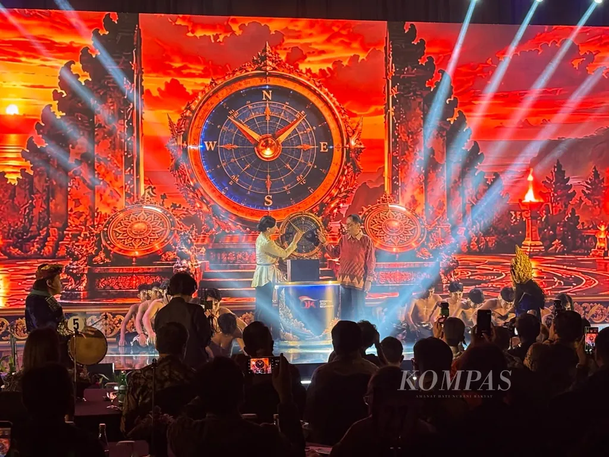
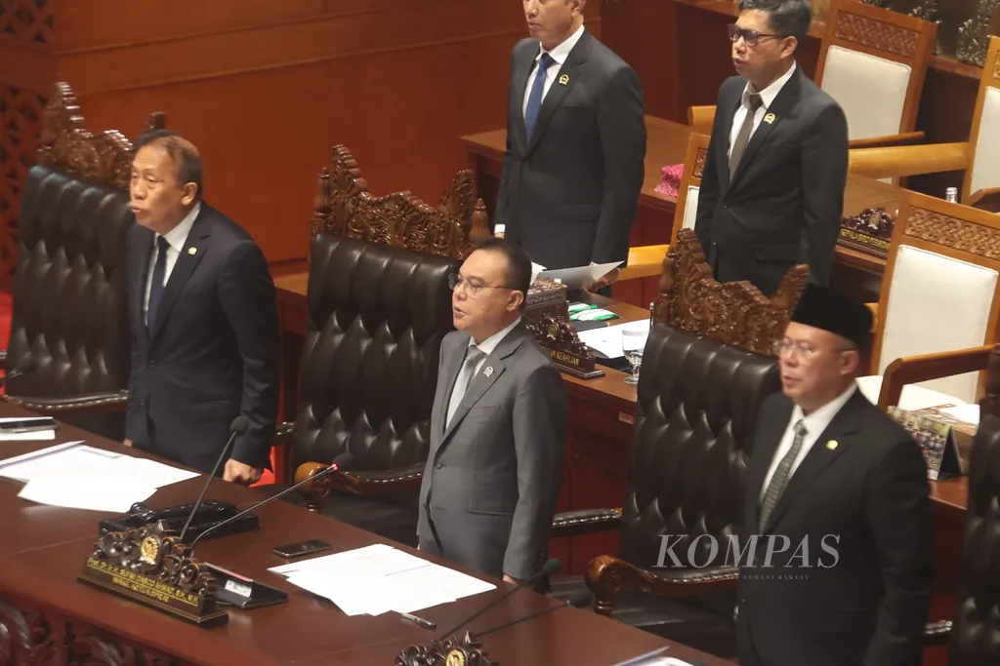
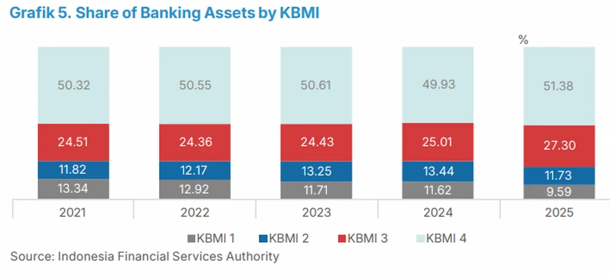
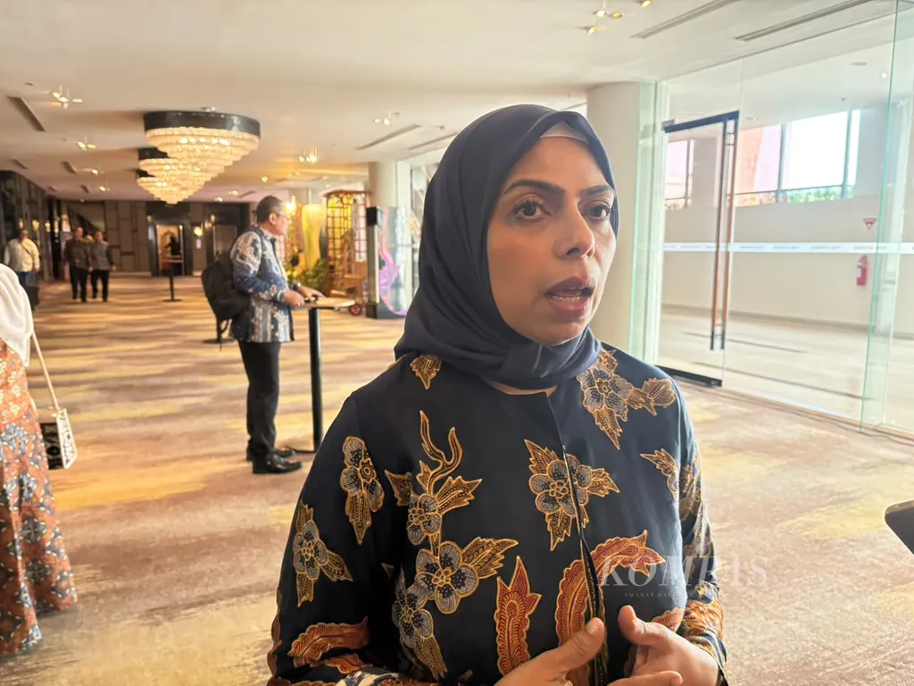
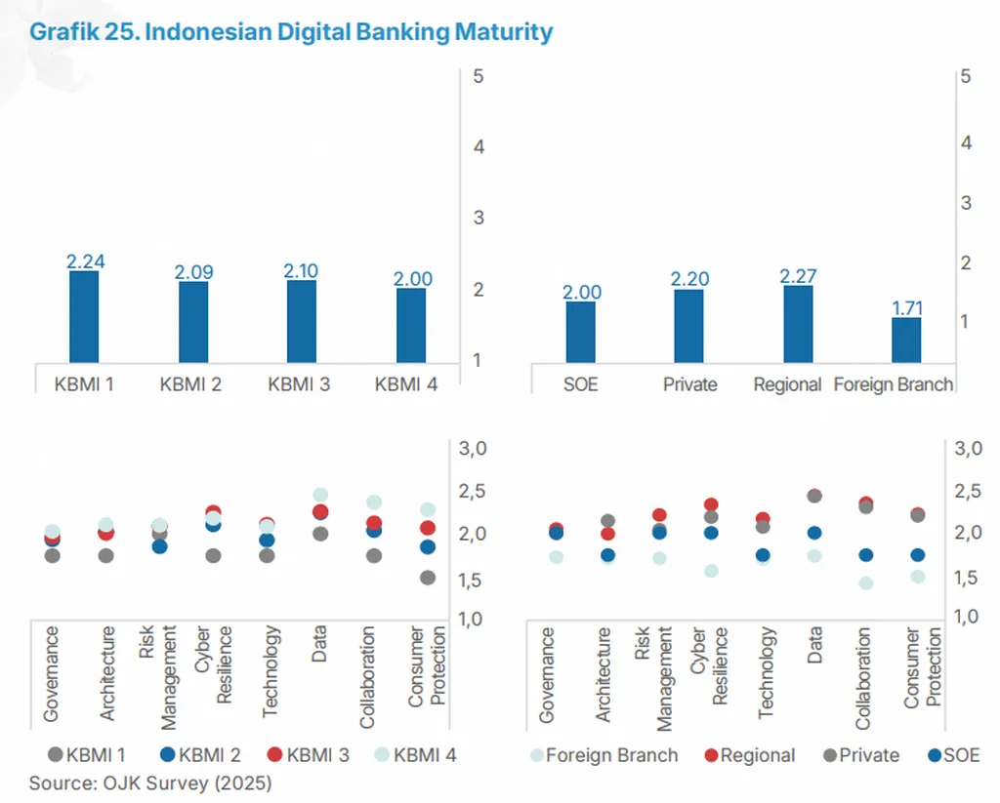

Lanskap industri perbankan nasional sedang bergeser. Pelucuran Roadmap Pengembangan dan Penguatan Perbankan Indonesia 2026-2030 oleh Otoritas Jasa Keuangan beberapa waktu lalu menandai arah transformasi industri perbankan, dari commercial banking menuju universal banking.
Dengan model ini, bank tak lagi hanya bertumpu pada fungsi intermediasi berupa menghimpun dan menyalurkan dana. Sebaliknya, terbuka ruang inovasi bagi bank untuk memperluas layanannya ke berbagai produk, seperti investasi dan pengelolaan kekayaan secara terintegrasi.
Apabila mengacu pada dokumen peta jalan terbaru, regulator telah memberikan rambu-rambu terkait pengembangan layanan dalam sistem universal banking, meliputi investment banking, wealth management, offshore products, serta aktivitas dan layanan terkait aset digital.
Kebijakan tersebut tidak serta-merta jatuh dari langit. Perubahan ini merupakan amanat dari Undang-Undang Nomor 4 Tahun 2026 tentang Perubahan atas UU No 4/2023 tentang Pengembangan dan Penguatan Sektor Keuangan (P2SK) yang disahkan pada 4 Juni 2026.

KOMPAS/AGUSTINUS YOGA PRIMANTORO
Berdasarkan hasil penelusuran Kompas, usulan mengenai perluasan cakupan kegiatan usaha perbankan tersebut justru datang dari inisiatif regulator. Salah satu tujuannya ialah untuk memperdalam pasar keuangan melalui peran industri perbankan.
Apalagi, pemerintah dalam dokumen Rencana Pembangunan Jangka Menengah Nasional 2025-2029 telah menargetkan rasio aset perbankan terhadap produk domestik bruto (PDB) pada 2029 sebesar 77,2 persen. Padahal, pada 2025, rasio aset perbankan terhadap PDB baru sebesar 57,29 persen.
OJK mau mengatur hal yang sudah terjadi agar ada landasan hukumnya.
Sementara itu, dalam proses perumusannya, Dewan Perwakilan Rakyat (DPR) ikut mendukung usulan tersebut, mengingat sebagian pelaku industri perbankan telah menjalankan konsep-konsep universal banking meskipun dalam praktiknya belum terintegrasi.
”Kenyataannya, grup perbankan kita, kan, memang sudah menjalankan fungsi itu. Banyak bank yang sudah punya perusahaan sekuritas dan asuransi. Jadi, OJK mau mengatur hal yang sudah terjadi agar ada landasan hukumnya,” kata salah seorang anggota Komisi XI DPR kepada Kompas, Selasa (13/10/2026).

Kompas/Hendra A Setyawan
Konsolidasi
Meski demikian, regulator menuntut beberapa kriteria minimum dalam rangka menyongsong perluasan aktivitas serta produk perbankan. Secara umum, standar ini meliputi pengembangan kapasitas teknologi informasi, ketahanan digital, dan tingkat maturitas digital.
Akan tetapi, apabila kriteria yang telah ditetapkan belum terpenuhi, bank akan didorong untuk menempuh konsolidasi. Langkah ini diharapkan dapat memperkuat struktur, ketahanan, efisiensi, skala usaha, dan daya saing bank.
Dalam jendela waktu ditetapkan, OJK akan mengkaji kerangka pengaturan terkait tata kelola, permodalan, manajemen risiko dan pengawasan dengan target selesai pada 2027-2028. Kemudian, regulator baru akan menerbitkan ketentuan atau peraturan OJK (POJK) terkait universal banking pada 2028-2030.
Masalahnya, ini perubahan sistem yang akan memerlukan banyak penyesuaian aturan dan sistem pengawasannya juga. Kita perlu cermat dan bertahap di dalam proses implementasinya.
Dian mengatakan, konsep-konsep implementasi sistem universal banking masih dalam proses penyusunan rancangan draf aturan. Penyusunan tersebut masih membutuhkan riset secara lebih mendalam karena dapat membuat perubahan besar.
”Masalahnya, ini perubahan sistem yang akan memerlukan banyak penyesuaian aturan dan sistem pengawasannya juga. Kita perlu cermat dan bertahap di dalam proses implementasinya,” ujarnya, Rabu (14/10/2026).
Di sisi lain, masih terdapat ketimpangan struktur modal dan kesiapan teknologi dalam industri perbankan. Berdasarkan data OJK per Desember 2025, sebanyak empat bank dalam Kelompok Bank berdasarkan Modal Inti (KBMI) 4 atau modal inti di atas Rp 70 triliun menguasai 51,38 persen dari total aset industri perbankan.

DATA OJK
Kemudian, pangsa 16 bank dalam KBMI 3 atau modal inti Rp 14-70 triliun sebesar 27,3 persen dari total aset industri. Sebaliknya, sebanyak 58 bank yang masuk dalam KBMI 1 atau modal inti sampai dengan Rp 6 triliun hanya menguasai 9,59 persen dari total aset industri.
Sementara itu, dilihat dari maturitas digitalnya (DMAB), rerata skor industri berada di sekitar 2,18, dengan KBMI 4 mencapai 2,27 dan Bank Asing sebesar 2,24. Sebaliknya, bank-bank dalam KBMI 1 tertinggal jauh di bawah rata-rata industri, yakni sebesar 1,71.
Ancang-ancang
Merepons perkembangan tersebut, para pelaku industri perbankan optimistis perubahan sistem menuju universal banking jauh lebih banyak memberikan dampak positif bagi industri. Salah satunya terbuka ruang inovasi yang lebar bagi bank untuk tumbuh melalui berbagai kanal layanan.
Sekretaris Jenderal Perhimpunan Perbankan Nasional (Perbanas) Anika Faisal berpendapat, rencana tersebut dapat meningkatkan daya saing industri perbankan nasional. Dengan sistem universal banking, bank dapat memberikan berbagai layanan, termasuk produk derivatif kepada nasabah secara terintegrasi (one stop service).
”Pada akhirnya semua jasa keuangan balance sheet-nya berakhirnya di bank juga karena bank yang punya aset dan liabilities. Kalau multifinance, pendanaannya dari bank. Peer to peer, pendanaannya dari bank karena yang bisa himpun dana dari pihak ketiga hanya bank,” tuturnya saat dihubungi pada Kamis (14/10/2026).

KOMPAS/AGUSTINUS YOGA PRIMANTORO
Menurut Komisaris Bank Jago tersebut, bank-bank yang sudah menjadi Perusahaan Induk Konglomerasi Keuangan (PIKK) sudah memiliki DNA universal banking. Sebaliknya, bank yang belum mempunyai konglomerasi harus membangun kapasitasnya dari dalam.
Ia mencontohkan, Bank Jago telah menjalin kerja sama dengan platform investasi, seperti Stockbit dan Bibit. Kerja sama ini dilakukan untuk memudahkan nasabah ritel agar dapat berinvestasi melalui aplikasi perbankan.
Maka dari itu, proses implementasi universal banking membutuhkan keterlibatan dari berbagai pemangku kepentingan, mulai dari OJK, Bank Indonesia (BI), Bursa Efek Indonesia (BEI), termasuk para pelaku industri perbankan.
Nasabah juga mendapat manfaat karena mereka bisa melakukan banyak hal hanya melalui satu pintu. Ujungnya, mungkin akan terjadi persaingan ’super-app’ yang disediakan oleh bank.
Di sisi lain, penting juga bagi regulator dan pelaku industri untuk meningkatkan literasi keuangan masyarakat. Dalam hal ini, konsumen perlu diedukasi mengenai jenis-jenis investasi dan prinsip dasar investasi beserta risikonya.
Sementara itu, Wakil Direktur Utama PT Bank Ina Perdana Tbk (Bank INA) Yulius Purnama Junaedi berpendapat, ada peluang keuntungan dari implementasi universal banking karena bank akan menjadi institusi sumber dana untuk transaksi dan investasi.
”Nasabah juga mendapat manfaat karena mereka bisa melakukan banyak hal hanya melalui satu pintu. Ujungnya, mungkin akan terjadi persaingan super-app yang disediakan oleh bank,” katanya dalam keterangan secara tertulis.

DATA OJK
Di sisi lain, Compliance Director and Corporate Secretary PT Bank Oke Indonesia Tbk (OK Bank) Efdinal Alamsyah mengatakan, penerapan sistem universal banking di Indonesia memiliki peluang sekaligus tantangan. Di satu sisi, terbuka kesempatan bagi bank untuk mengembangkan bisnis dan meningkatkan daya saing.
Bagi nasabah, integrasi layanan keuangan dapat memberikan kemudahan akses dan pilihan layanan yang lebih beragam. Di sisi lain, bagi regulator, integrasi tersebut berpotensi mempermudah pengawasan secara menyeluruh jika didukung sistem dan kerangka regulasi yang tepat.
”Namun, dengan kondisi industri perbankan Indonesia yang terdiri dari lebih dari 100 bank, penerapannya memerlukan kajian yang matang dan regulasi yang proporsional agar manfaatnya dapat dirasakan secara luas, persaingan tetap sehat, dan stabilitas sistem keuangan tetap terjaga,” ujarnya.